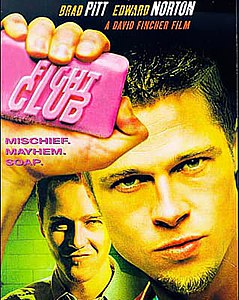

Мы ходим на работу, которую ненавидим, чтобы купить барахло, которое нам не нужно.
Алгосный клуб
- Первое правило клуба – не упоминать об Алгосном клубе
- Второе правило Алгосного клуба: не упоминать нигде об Алгосном клубе
- Третье правило Алгосного клуба: прогер крикнул «стоп», выдохся, отключился — контест окончен
- Четвертое: в контесте участвуют лишь двое.
- Пятое: один контест за вечер, друзья.
- Шестое: снимать обувь и рубашки.
- Седьмое: контест продолжается столько, сколько нужно.
- Восьмое и последнее: тот, кто впервые пришёл в клуб — пришет код!

Если Вы читаете это, значит это предупреждение именно для вас. Каждое слово, которое вы прочитаете, бессмысленно — вы просто тратите напрасно очередную частичку своей жизни. Неужели вам больше нечего делать? Неужели ваша жизнь настолько пустая и серая, что вы даже не можете найти, чем занять себя в свободное время? Неужели вы прочитали все, что хотели прочитать? Неужели вы подумали обо всем, о чем хотели подумать? Немедленно отправляйтесь на улицу. Найдите себе особу противоположного пола. Прекратите совершать дурацкие покупки. Увольтесь с работы. Докажите, что вы живы. Если вы не начнете действовать, то так и проживете свою никчемную жизнь. Я вас предупредил... 1 Q